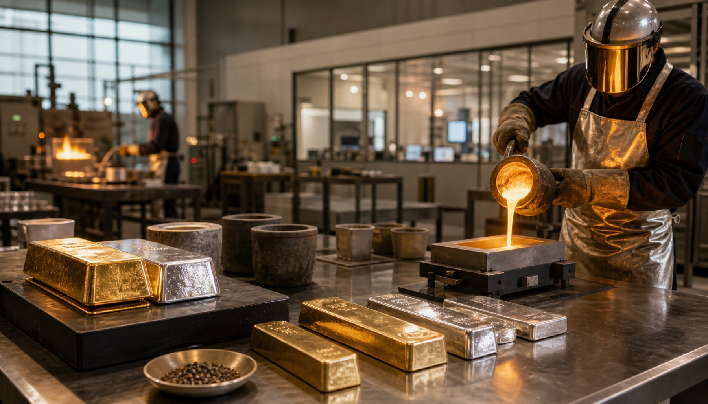
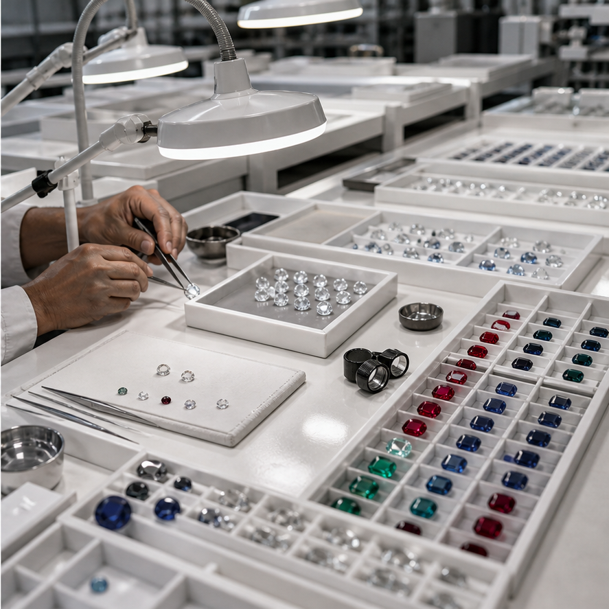

Refinery
Gemstone preparation and grading under one disciplined standard.
Our refinery workflows support cleaning, sorting, inspection, and premium readiness for cutting, crafting, and delivery. Refining is treated as a discipline of consistency, where controlled handling helps preserve trust in every finished stone and jewelry piece.
Refining stages are designed to balance quality control, consistency, and careful handling across gemstone preparation, sorting, and documentation. That includes attention to cleaning, grading readiness, process records, and the visual standards required before a stone can move confidently into cutting, manufacturing, or sale.
The outcome is a stable foundation for finished jewelry, certified offerings, and presentation-ready inventory. In a premium business, refinery discipline is not an isolated technical stage; it is part of the larger promise that what is offered to the client has been handled with knowledge and care.
